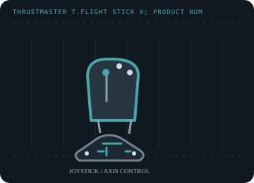

[ JOYSTICK CONTROLLERS // IDENTIFIED COMPONENT ]
Thrustmaster T.Flight Stick X
Single-unit USB flight stick with twist rudder, integrated throttle and a PC/PlayStation 3 mode selector.

MODEL IDENTIFICATION: Thrustmaster T.Flight Stick X; product numbers include 2960694, 2960758, 2962065, 2971001 and 4160526. Published family information does not establish the revision or condition of an individual unit; compare its label and included parts with the linked documentation.
Model specifications
| Catalog subcategory | Joystick controllers |
|---|---|
| Exact model / identifier | Thrustmaster T.Flight Stick X; product numbers include 2960694, 2960758, 2962065, 2971001 and 4160526. |
| Axes and buttons | Pitch/roll, twist-rudder and integrated throttle axes with trigger, action buttons and a POV hat; check the manual's button map for the exact revision. |
| Physical interface | Wired USB joystick with a PC/PS3 mode selector; controller reports button, hat and analog-axis input to the selected host. |
| Sensors and protocol | Analog axis sensing with digital button and POV states. Thrustmaster's support sheet does not state a sensor technology; verify full travel and return-to-center on the unit. |
| Power | USB bus-powered; no external adapter is listed in the manufacturer's user manual. |
| Host OS and driver compatibility | PC and PlayStation 3 modes. Thrustmaster's support archive lists a Windows 7/8/10/11 unified driver package for the stick; game-level mapping and newer OS behavior vary. |
Setup and calibration
Choose PC mode, connect USB, and use the Windows game-controller panel to inspect stick, twist and throttle axes. Calibrate before setting game dead zones; avoid overlapping OS and in-game curves.
Keep the operating-system baseline calibration and in-game sensitivity/dead-zone settings separate. Record the OS, driver, firmware and game used to test each axis and button.
Preservation and service notes
Test the integrated throttle slider, twist centering, POV directions and base buttons. Inspect the cable and mode switch; save an as-tested axis map because profiles may assume a different mode.
For an archive specimen, photograph the model label, note all included cables/adapters and distinguish directly observed behavior from published specifications.
References and support
- T.Flight Stick X support, manual and drivers — ThrustmasterManufacturer product page with product numbers, software and driver information.
- T.Flight Stick X user manual — ThrustmasterManufacturer's PC/PS3 setup and control documentation.
Vendor support pages and manual downloads can change. Preserve the applicable manual and installer with a legacy host image, and verify the printed revision before service.